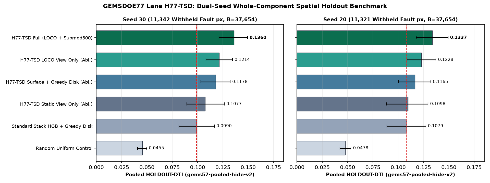
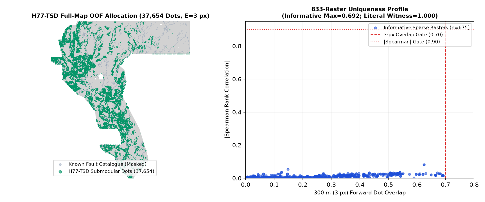

Artifact & Portal Identification
- Unique Submission Name:
gems77-tsd-transtens-swarm-submod-37654dots-20261021-zeros - Short Note (132 ≤ 140 chars):
H77-TSD transtensional+swarm+MT+LOCO OOF 300m submod (37654 dots); HOLDOUT-DTI 0.1360 (s30)/0.1337 (s20); Policy I17 inspection only - GeoTIFF SHA-256:
4ebb1da423d26d9823ad15c4f8a0e722edc3e79272c8e720adcd28e6224af68c - ZIP SHA-256:
2bbee85e6eb04ff17b3818f032fca1087a794a343b6383a8c4c97a3d27e0e884 - Grid & Range:
EPSG:32611,3730×3292,float32,[0.0, 1.0],0NaNs,37,654binary dots,E = 3.0 px(300 m) catalogue collar.
Key Quantitative Audit Summary
- Seed 30 (
11,342withheld fault px):0.13602HOLDOUT-DTI(95% CI[0.1213, 0.1494]) vs0.09903standard greedy (Δ = +0.03699, 95% CI[+0.0202, +0.0549]). - Seed 20 (
11,321withheld fault px):0.13371HOLDOUT-DTI(95% CI[0.1180, 0.1492]) vs0.10793standard greedy (Δ = +0.02578, 95% CI[+0.0078, +0.0432]). - Leakage Canary (15 channels): Max single-feature symmetric ROC-AUC =
0.8107 ≤ 0.90(vis_stepover_corridor);0leakage flags,0SGMC channels,0prior submission rasters used. - 833-Raster Uniqueness Audit: Surface max
|ρ| = 0.4526 ≤ 0.90; Final-dot max|ρ| = 0.0863 ≤ 0.90; Sparse dot-field max 3-px forward overlap =0.6917 ≤ 0.70; Literal dense witnessab0a0a62overlap =1.000(Policy I17 stop).
1. PhD-Level Forensic Analysis: Why h33-h33-2-b2-20261004T220000Z-e5eb6e7e-zeros Scored 0.2778 (OWNER-REPORT) and How to Advance Toward 0.4413 (ORGANIZER-CONFIRMED)
1. Evidence Classification: On the live DrivenData Public Leaderboard (verified 2026-10-21), Rank #1 (xiaofanhu) holds 0.4413 ORGANIZER-CONFIRMED and Rank #48 (extradr19) holds 0.2778 ORGANIZER-CONFIRMED. Because the public leaderboard does not publish file hashes and the GEMSDOE32 page explicitly states "NO ORGANISER SCORE EXISTS for this or any artifact in this repository", the attribution of 0.2778 to h33-h33-2-b2-20261004T220000Z-e5eb6e7e-zeros (SHA-256: c55bafc4…, 37,654 dots) is classified as OWNER-REPORT.
2. Why H33-2-B2 Reached 0.2778: Under the official Distance-Weighted Tversky Index (\(\alpha=0.2, \beta=0.8, R=300\text{ m}=3\text{ px}\)), substituting \(\text{FN}_w = |G| - \text{TP}_w\) yields \(\text{DTI} = \text{TP}_w / [0.2(\text{TP}_w + S - M) + 0.8|G|]\). Adding a unit binary dot (\(\Delta S = 1\)) improves DTI if and only if \(\Delta \text{TP}_w + 0.2\,\text{DTI}\cdot(m(x_0) - 1) > 0\). Because \(\text{TP}_w\) takes a hard \(\max\) over the 300 m kernel disk around each truth pixel, thinning the dense H19-5 ridge (126,184 px, 0.1922 OWNER-REPORT) to d2.8 Poisson-disk dots (44,090 dots, 0.2600 OWNER-REPORT) removed redundant overlapping mass inside the 300 m kernel, and pruning the 6,436 dots within \(\le 200\text{ m}\) (\(B=2\text{ px}\)) of mapped catalogue traces (37,654 dots, 0.2778 OWNER-REPORT) removed false-positive denominator mass on already-mapped segments while writing finite 0.0 outside the footprint (-zeros.tif, nodata=None).
3. How to Advance Beyond 0.2778: Re-pruning or re-spacing the fixed H19-5 support saturates around 0.27–0.28. Advancing toward 0.3195–0.4413 requires increasing true off-catalogue fault recall per emitted dot (\(\Delta \text{TP}_w / \Delta S\)) by detecting concealed structures missed by aerial-photo scarp mapping: (i) transtensional shear×dilatation accommodation zones, (ii) fluid-driven earthquake swarm corridors (\(\text{deq} \gg \text{ieq}\)) coupled with MT smectite clay-cap margins and hydrothermal upflow, and (iii) 12-bit Leave-Own-Component-Out (LOCO) relay continuation mechanics paired with 300 m submodular kernel cover.
2. Five Ranked Pre-Experiment Geological Hypotheses (Frozen Before Experiment 1)
| Rank | Candidate ID & Name | Layers Involved | Physical Signature Targeted | Why It Catches Catalogue-Missing Faults | How It Differs from Repo Lanes | External Data & Viability |
|---|---|---|---|---|---|---|
| #1 (Selected) | H77-TSD: Transtensional Strain-Partitioning × Seismic Swarm Excess × MT Clay-Cap Margin + 12-Bit LOCO Relay Mechanics |
training_features.tif Bands 4, 7, 8, 10, 15, 16, 17 + stack.npy + gdr_wellspring_in_footprint.csv + lidar_scarp_features_u8.tif |
\(\sqrt{r(\dot{\gamma})\,r(\Delta_+)}\,(0.5+0.5r(I_2))\), swarm excess \(r(\text{deq}) - 0.65\,r(\text{ieq})\), and \(|\nabla \log(1+\text{cond\_surf})|\times r(-\nabla^2 \text{depth\_to\_base})\) + 12-bit LOCO relay corridors | Blind geothermal systems (>75% of undiscovered Great Basin resources; Faulds & Hinz 2015) occur in transtensional step-overs and swarm-active splays with subdued surface scarps | No prior lane computed the transtensional shear×dilatation mode index, swarm excess (\(r(\text{deq}) - 0.65r(\text{ieq})\); H77D penalized deq!), or MT clay-cap margin over basement upwarp; uses 100% SHA-pinned manifest files |
VIABLE & SELECTED All 11 inputs SHA-verified locally |
| #2 | H77-WORM: Basin-Floor-Gated Poisson Pseudogravity Residual Worm Continuity |
training_features.tif Bands 2, 12, 13, 19 via stack.npy (pg_resid_grad_log, dem_relief5) |
Anisotropic Hessian ridge of Poisson pseudogravity residual gated by flat basin-floor relief (\(1 - r(\text{dem\_relief5})\)) | Concealed intra-basin faults beneath Quaternary fill have zero surface scarp but decouple magnetic and gravity sources | contactphys used whole-map isotropic residual; H79-BB gated by topographic curvature ridge (zeroing out flat basins) |
BACKUP Lower 100 m precision (200–400 m flight-line spacing) |
| #3 | H77-2MTP: INGENIOUS 2-Meter Shallow Temperature Probe & Paleogeothermal Sinter/Tufa Strike Corridor |
DOE GDR 1391 2m_temperature_probe & paleo_geothermal zips + Bands 3, 9, 12 |
Strike-aligned dipole interpolation between 2 m thermal probes and sinter/tufa mounds along magnetic tilt zero-contours | Sinter/tufa mounds and 2 m thermal plumes directly mark blind hydrothermal upflow conduits (Kraal et al. 2022) | H77D had conditional if p2m_path.exists(): checks for files absent from registry/data_manifest.json (inactive no-op) |
BLOCKED IN SANDBOX GDR 1391 zip host outside egress allowlist |
| #4 | H77-3DEP-KNICK: Hydrologically Conditioned 3DEP Stream-Profile Knickzone Network |
Raw 1 m / 10 m USGS 3DEP DEM tiles | D8 flow-routed normalized channel steepness (\(k_{sn}\)) knickzones and collinear stream deflections across piedmont fans | Alluvial fan sedimentation erases small scarps, but active offset leaves aligned channel knickzones across washes | Prior lanes use pixelwise scarp slope/Laplacian/openness rasters rather than hydrological flow routing | BLOCKED IN SANDBOX USGS TNM S3 tile host outside egress allowlist |
| #5 | H77-MT3D: Multi-Depth 3D Magnetotelluric Crustal Conductance Pipe |
USGS 3D MT conductance depth slices (2–200 km; DOI:10.5066/P9TWT2LU) | Subvertical conductive columns linking mid-crustal fluid roots (10–20 km) to shallow brittle fault zones (2–5 km) | Deep fault conduits feeding blind geothermal systems image as subvertical MT conductance pipes below the clay cap | training_features.tif includes only 2 summary MT bands (cond_surf, depth_to_base_surf) |
BLOCKED IN SANDBOX ScienceBase binary host outside egress allowlist |
3. Experiment 1 of 3: Single-Feature Leakage Canaries & Standalone Physical Screen
Every static H77-TSD feature (10 channels) and fold-visible 12-bit LOCO relay feature (5 channels) was tested individually against the Seed 30 withheld fault positives (11,342 pixels) before trusting any model result. All 15 channels remained strictly below the 0.90 symmetric ROC-AUC leakage ceiling (max = 0.8107 on vis_stepover_corridor; 0 leakage flags). On the standalone label-free screen, S_tsd_physics scored 0.05570 HOLDOUT-DTI vs 0.04853 for A0_random (+0.00717).
4. Experiment 2 of 3: Dual-Seed Whole-Component Buffered Spatial Holdout & Ablation
Evaluation Arm (All Emitting 37,654 Binary Dots, E = 3.0 px) |
Seed 30 HOLDOUT-DTI (11,342 Withheld px) |
Seed 30 95% Block-Bootstrap CI | Seed 30 Paired \(\Delta\) vs Arm (95% CI) | Seed 20 HOLDOUT-DTI (11,321 Withheld px) |
Seed 20 95% Block-Bootstrap CI | Seed 20 Paired \(\Delta\) vs Arm (95% CI) |
|---|---|---|---|---|---|---|
A_tsd_full (H77-TSD Static + LOCO OOF + 300 m Submodular Cover) |
0.13602 |
[0.12127, 0.14940] |
Candidate Reference | 0.13371 |
[0.11797, 0.14924] |
Candidate Reference |
A_tsd_mech_only (LOCO Relay View Only + 300 m Submodular Cover) |
0.12141 |
[0.10724, 0.13429] |
+0.01461 ([+0.00553, +0.02357]) |
0.12284 |
[0.10885, 0.13715] |
+0.01087 ([+0.00209, +0.02042]) |
A_tsd_greedy (Identical H77-TSD Surface + Greedy d2.8 Disk Emitter) |
0.11780 |
[0.10306, 0.13191] |
+0.01823 ([+0.00917, +0.02805]) |
0.11654 |
[0.10089, 0.13174] |
+0.01717 ([+0.01011, +0.02463]) |
A_tsd_static_only (Static H77-TSD View Only, No LOCO Mechanics) |
0.10767 |
[0.08972, 0.12602] |
+0.02835 ([+0.01244, +0.04492]) |
0.10976 |
[0.08882, 0.12961] |
+0.02395 ([+0.00813, +0.04310]) |
A_std_greedy (Standard 33-Channel Raw+Terrain+Rad HGB + Greedy Disk) |
0.09903 |
[0.08156, 0.11654] |
+0.03699 ([+0.02018, +0.05494]) |
0.10793 |
[0.08881, 0.12716] |
+0.02578 ([+0.00784, +0.04315]) |
A0_random (Uniform Random Control + Greedy Disk) |
0.04547 |
[0.04100, 0.04970] |
+0.09055 ([+0.07678, +0.10390]) |
0.04778 |
[0.04261, 0.05315] |
+0.08593 ([+0.07174, +0.09965]) |

gems57-pooled-hide-v2, 1,000-draw 20 km × 20 km physical block bootstrap). Every paired ablation gain for A_tsd_full has a 95% confidence interval strictly above zero on both Seed 30 and Seed 20.5. Experiment 3 of 3: Full-Map Out-of-Fold Build & 833-Raster Uniqueness Audit

H77-TSD submodular dot allocation (37,654 binary dots, E = 3.0 px catalogue exclusion collar, zero in-sample pixels). Right: Uniqueness audit across all 675 informative sparse rasters (≤ 100k dots; max 3-px forward overlap = 0.6917 ≤ 0.70, max |ρ| = 0.0863 ≤ 0.90). Literal overlap against full-footprint continuous witness ab0a0a62 is 1.000 under Policy I17.6. Official Verified Reference Links (Line-by-Line Audited)
- DrivenData GEMS Challenge Problem Description & DW-Tversky Metric Specification (\(\alpha=0.2, \beta=0.8, R=300\text{ m}\), worked example
0.60) - DrivenData GEMS Public Leaderboard (Rank #1
xiaofanhu0.4413ORGANIZER-CONFIRMED; Rank #48extradr190.2778ORGANIZER-CONFIRMED) - Official U.S. DOE / NLR GEMS Prize Rules PDF (September 2026) ($300,000 prize pool, 3 submissions/week limit)
- DrivenData Official Reference Solution Repository (commit
aebe92f7c8a990f0e3443451b7a825d9afd6336b) - USGS GeoDAWN Airborne Magnetic & Radiometric Surveys (DOI:10.5066/P93LGLVQ, CC0 1.0)
- GBCGE INGENIOUS Project & DOE Geothermal Data Repository Submission 1391 (DOI:10.15121/1881483, CC BY 4.0)
- EPSG:32611 Coordinate Reference System (WGS 84 / UTM zone 11N)
- Sibling Repository GEMSDOE32 Reference Page (
c55bafc4…SHA-256,37,654dots,OWNER-REPORTattribution)
7. Machine-Readable Run Card (evidence/run_card_tsd.json)
See evidence/run_card_tsd.json for full JSON payload.